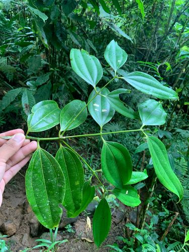
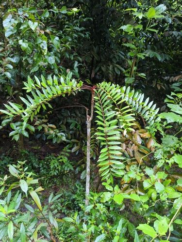
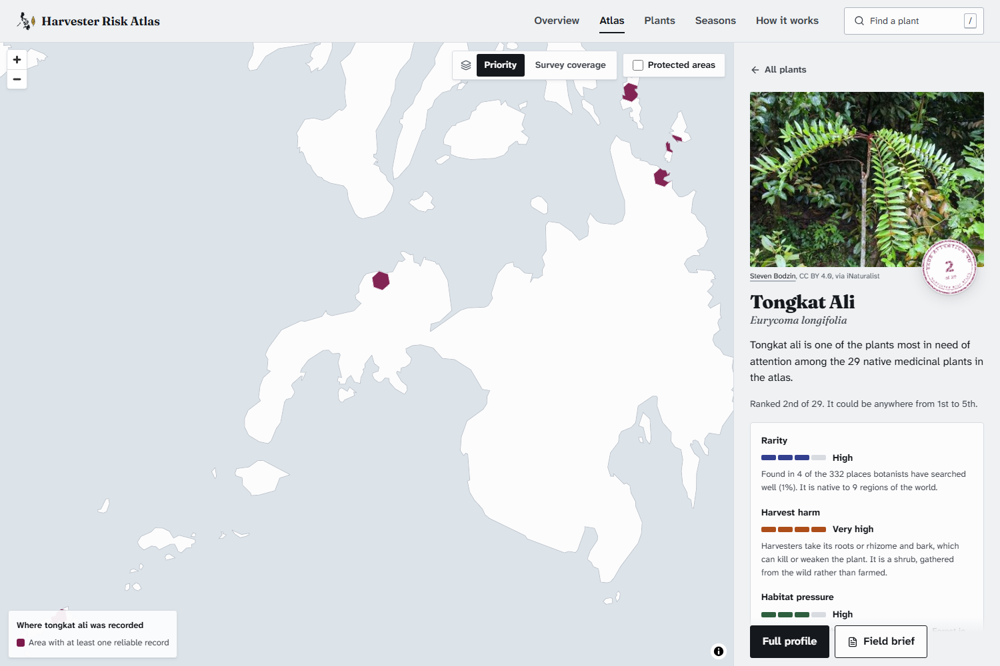
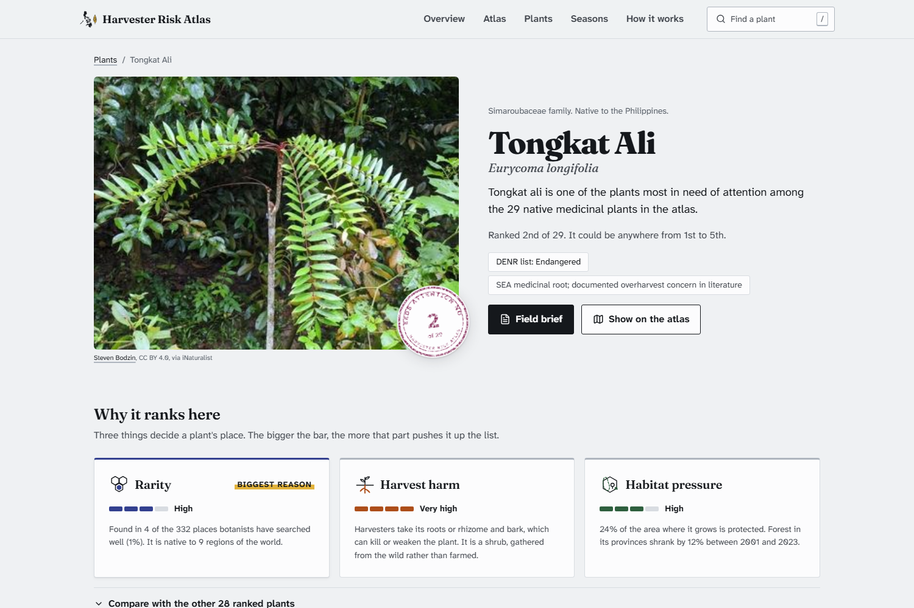
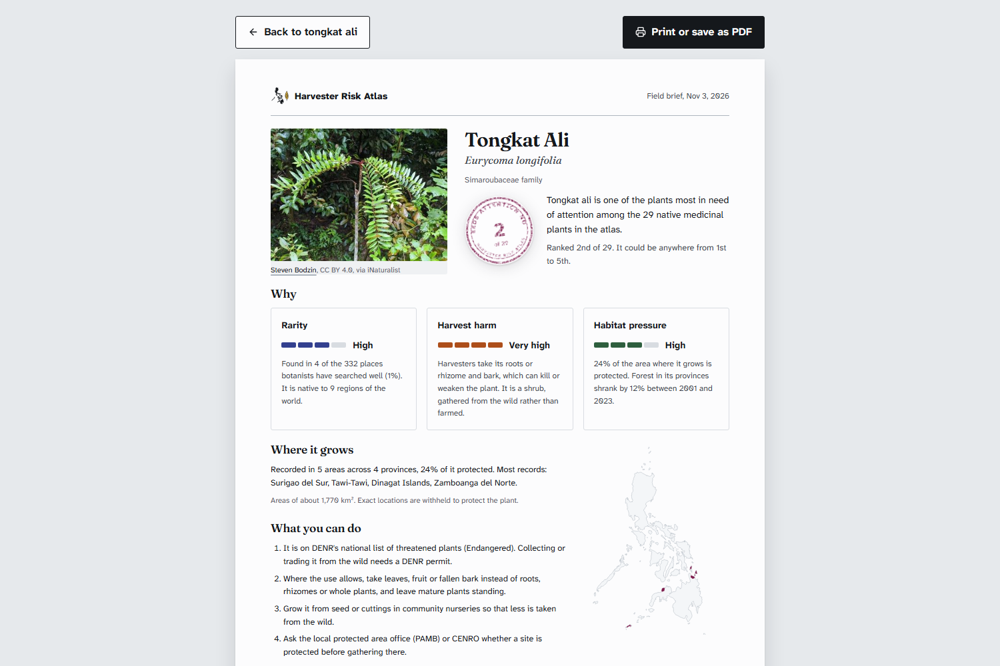
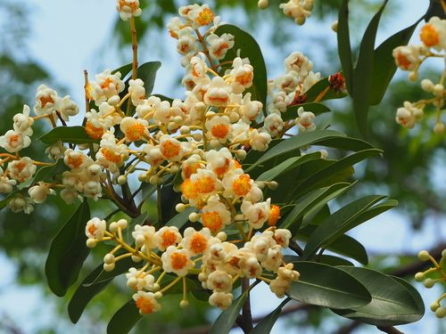
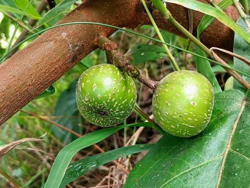
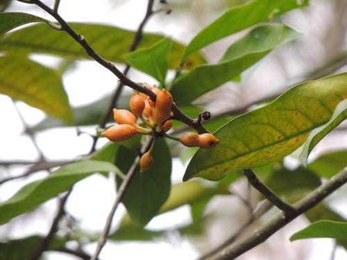

Up to 4 billion people rely on herbal medicine.
Most medicinal plants in trade are taken from the wild.
Almost no one is counting what is left.
Which wild medicinal plants of the Philippines need help first, where they grow, and how sure we are.
Yuan Andrei C. Mariano · Alicia Jhyle Vilale

plant species have documented medicinal uses.
of those in international trade are collected from the wild.
have ever been assessed for extinction risk.
of those assessed are already threatened.
Trade in these plants tripled in value between 1999 and 2015, to over US$3 billion. When roots or bark are taken, the plant often dies. When a medicinal plant disappears, so does a remedy families have used for generations.
of tree cover lost every day from 2001 to 2023, about 245 football pitches a day.
1.47 million ha in total: 7.9% of the tree cover of 2000.
plants on the government's threatened list. 248 are critically endangered.
But harvest is never measured, so no one can say which medicinal plants are being dug up fastest.

Its roots are dug up and sold as medicine. Officially Endangered. In the whole country, open databases hold only 5 reliable records of it.
For each native medicinal plant we ask three simple questions, using only open data. Each counts equally.
How seldom botanists find it where they have looked hard, and how small its world range is.
Taking roots, bark or the whole plant scores highest. Slow-growing trees and wild-only plants score higher.
How much of where it grows is unprotected, and how fast forest is being lost there.
Climate change is shown on each plant's page but not scored: projected warming is about +1.5 °C for every plant, so it cannot tell them apart.
open sources: GBIF records, Kew's plant checklist, protected areas, forest loss, climate, and Stuart's Philippine Medicinal Plants.
reliable records kept out of 9,660, after 9 checks (bad coordinates, garden plants, duplicates and more).
native plants scored, out of 51. The other 22 are listed but not ranked: not native, or too few records.
re-runs with slightly different weights and evidence. Each plant gets a rank range, not just one number.
Fairer rarity. Busy roadsides get photographed more than remote forest. So we measure rarity only in the 332 well-searched areas (out of 1,267), where a missing plant really means it is scarce.

Plants appear only as broad hexagons, never exact spots, so the map can't lead collectors to them.

Three reasons in plain words, and how far the rank could move.

A one-page brief to print, with what rangers and harvesters can do.
2nd (could be 1st–3rd)
Found only in the Philippines. Its bark is harvested.
2nd (could be 1st–5th)
Roots dug up. Officially Endangered.

3rd (could be 1st–4th)
A forest tree; its bark and sap are taken.

4th (could be 3rd–5th)
A wild fig; bark gathered from the wild.

5th (could be 2nd–9th)
Only 6 reliable records in the country.
For all five, the biggest reason is rarity. 4 more plants are on keep watch and 20 are lower concern. Two of the five are on DENR's threatened list, even though the list was never an input.
names matched in World Flora Online, the backbone EthnoHack recommends; all accepted names. The hybrid Mentha × piperita is flagged and not ranked.
Co's Digital Flora of the Philippines (built on Leonardo L. Co's work) confirms tongkat ali as native and DENR Endangered. Disagreements are shown, never hidden.
of the land next to known records of the 29 ranked plants has barely been searched: 2,992 of 4,542 neighbouring areas.
Seasons: play the year and see where each plant is recorded and when it is seen in flower or fruit, dry season and wet, with every month weighed against survey effort (records peak March to May).
Where to look next, on every plant page: places Co's Flora documents with no open record yet (tongkat ali: Mindoro, Homonhon, Bucas Grande), under-searched areas beside known records, and records outside the documented range to double-check. And the ranking holds: change the maths and the order barely moves (Spearman ρ = 0.97).